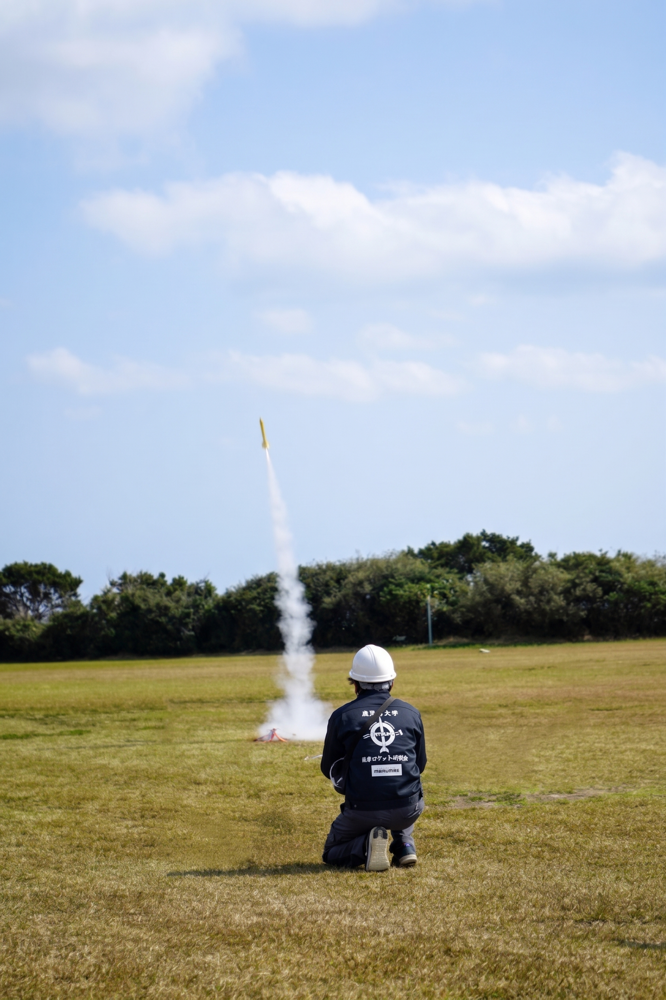
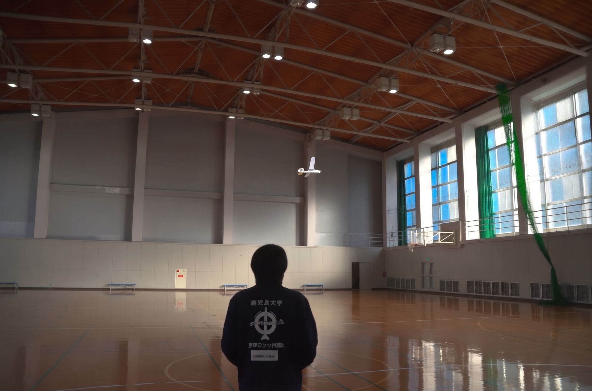
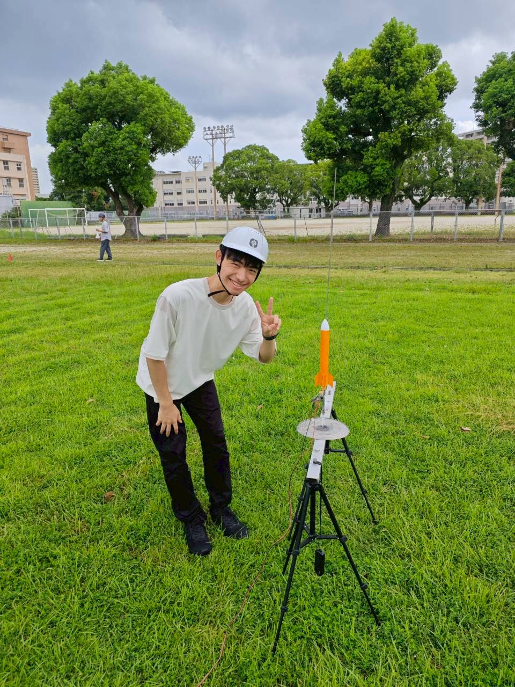

モデルロケット開発
新入部員はまず紙を材料とした初号機を製作し、シミュレーションソフトで飛距離や安全性を計算したうえで打ち上げを行います。 毎年3月にはJAXA種子島宇宙センターで開催される「種子島ロケットコンテスト」へ出場しています。
Kagoshima University Rocket & Aerospace Club
鹿児島大学SATSUMAロケット研究会は、「みんなのやりたいことを応援する」を軸に、
モデルロケット・ハイブリッドロケット・CanSat・模型航空機の設計・製作・打ち上げを行っています。
新入生の初号機製作から全国大会への挑戦まで、幅広い分野で活動しています。
新入部員はまず紙を材料とした初号機を製作し、シミュレーションソフトで飛距離や安全性を計算したうえで打ち上げを行います。 毎年3月にはJAXA種子島宇宙センターで開催される「種子島ロケットコンテスト」へ出場しています。
固体燃料と液体酸化剤を組み合わせたハイブリッドロケットの独自開発プロジェクトです。 安全性とコストパフォーマンスに優れたエンジンおよび機体の設計・燃焼実験に取り組んでいます。
空き缶サイズの小型模擬人工衛星「CanSat」の設計・制御開発を行っています。 上空からの投下・着地後に自律制御でゴールへ向かうミッションなどに挑戦しています。
小型モーターを使用した模型飛行機やグライダーの設計・製作を行っています。 全日本学生室内飛行ロボットコンテストでの入賞を目指し、講義の合間にも飛行テストを実施しています。



顧問である片野田洋教授より会計監査をいただきました令和7年度会計報告を掲載いたしました。
鹿児島の大学生向けキャリア支援コミュニティ「薩摩就活」を運営する株式会社鶴結び様よりご支援を頂きました。
鹿児島県出水市に本社を置く高精度部品加工メーカー・株式会社マルマエ様よりご支援を頂きました。
多くの皆様からの温かい応援・ご投票をいただき誠にありがとうございました。
「ベストプレゼンテーション賞」「住友精密工業賞」を受賞いたしました。
3月2日〜6日に開催された第19回種子島ロケットコンテストに出場し、3位入賞を果たしました。
全国大会にて優勝および4位入賞の成績を収めました。
| 活動場所 | 郡元キャンパス 工学部機械工学1号棟 L114 〒890-0065 鹿児島県鹿児島市郡元1丁目21-40 |
|---|---|
| 活動日 | 月曜日・水曜日・木曜日・金曜日 放課後（任意参加・状況に応じて変更あり） |
| 活動時間 | 17:40 〜 18:30 |
| 最寄り駅 | 鹿児島市電「唐湊電停」／ JR指宿枕崎線「郡元駅」 |
| 顧問 | 片野田 洋 教授（鹿児島大学 工学部） |
日頃より当研究会の活動にご理解とご支援を賜り、誠にありがとうございます。 いただいたご支援は機体製作費や大会遠征費など、学生の挑戦のために大切に活用させていただいております。
年度ごとの会計報告資料は images/ フォルダに画像を保存し、リンクまたは画像表示で掲載できます。
見学希望・入部相談・取材やご支援に関するお問い合わせは、メールまたは各SNSのDMよりお気軽にご連絡ください。